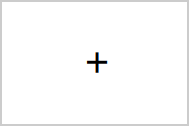

When the shapes appear, your job will be to press the "z" key with your left index finger, as quickly as possible, if you see either a circle or a square. The circles and squares could be either in the little shapes or the big shapes. If you don't see any circles or squares on the screen, don't press anything.